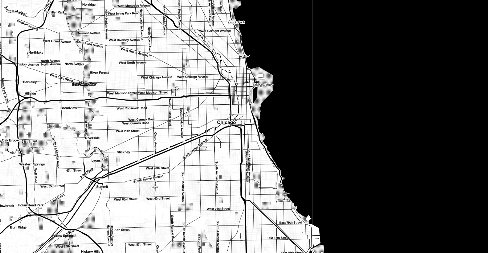
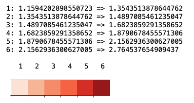

Chicago Crashes
The City of Chicago is America's third-most-populous city and is one of
the largest transportation centers in America. In the following, we take a
deep dive into all of police registered traffic crashes of 2019—is it safe
to drive in Chicago's hectic traffic life?
Explainer Notebook

By
Marco Illemann, Rasmus Suonperä Liebst & Robert Marker Karlsson
May, 15 2020
In this project, we investigate the traffic of the City of Chicago as a
case study of a busy urban environment. With its population of
approximately 2.7 million it is the third-most-populous city in the United
States. Daily life in Chicago thus entails millions of people
participating in the city's traffic. We will have a main focus on temporal
patterns of traffic, e.g. how investigating which times of the day sees
the most crashes.
Two data sets are used for this project:
In the following, these are referred to as the Crashes and
Congestion
data sets, respectively. Both sets are freely available via
Chicago Data Portal.
The Crashes data set contains location as well as a multitude of meta data
on each police registered traffic crash within the City of Chicago limits
and under the jurisdiction of Chicago Police Department.
The Congestion data set contains information about the congestion of the
streets. Congestion is estimated by probing GPS traces from the public
transportation buses, yielding regional average speeds of buses with 10
minutes intervals. The congestion data set features a division of Chicago
into 29 regions that covers the city (except O’Hare airport area). With
comparable traffic patterns, a region is comprised of two or three
community areas.
The combination of theses two data sets allows for relating each crash to
one of the 29 defined regions of the City of Chicago, as well as the
estimated level of congestion at the time of the crash.
Through careful analysis of the data, the goal is to elicit interesting
findings about the traffic patterns of the City of Chicago and convey them
in an intuitive manner.
Regions of Chicago
Chicago is divided into 29 regions in order to estimate traffic
congestion around the city. To visualize this partition, all crashes has
been plotted with a unique color for each region. To ease the relation
between future findings and location of the regions, the unique IDs are
added to the figure.
Loading...

Figure X
The 29 regions of Chicago with all crashes plotted as colored circles.
Primary Contributory Cause
One interesting attribute of the Crashes data set is the
PRIMARY CONTRIBUTORY CAUSE. The figure below shows the
distribution of causes over all crashes of 2019. It is seen that the two
most common causes by far are
FAILING TO YIELD RIGHT-OF-WAY and
FOLLOWING TOO CLOSELY:
Loading...
Figure X
The distribution of primary causes for crashes.
The large range in number of crashes in the figure makes it difficult to
read the values of the left most part, this can be remedied by using a
log scale for the y-axis:
Loading...
Figure X
The distribution of primary causes for crashes (on a log scale).
Regional Stats
The figure below shows the distribution of crashes over all 29 regions
for 2019. It is seen that the region South West Side (with ID 18) is
suffering the most from crashes, whereas
Riverdale-Hegewisch (with ID 28) is the region with the least
crashes.
Loading...
Figure X
Distribution of crashes over the 29 regions of chicago.
On the heat map below it can be seen how all crashes in our data set is
distributed around the city. It is clear that the highest density of
crashes is centered around the harbor. Looking at the
regions plot from earlier we can see that the concerned regions
are 12, 13 and 29, i.e. the Chicago Loop discussed earlier.
Loading...
Figure X
Heat map of all crashes of 2019 in Chicago.
The figure below shows the average speed for public transportation buses
for all 29 regions for 2019. It is seen that buses servicing the region
Chicago Loop (with ID 13) has the lowest average speed, whereas buses in
the region Washington Hts-Roseland-Pullman (with ID 26) has the highest
average speed. Chicago Loop is Chicago's official downtown area, which
is
"celebrated for its dynamic architecture and big city buzz"
according to
Choose Chicago. It features
a high population density of 8200/km2 (according to
this report
from Chicago Metropolitan Agency for Planning (CMAP)). On the other
hand, areas further away from the Loop, e.g. Washington
Hts-Roseland-Pullman (with ID 26) with the highest average speed, has a
much lower population density with 3373/km2 (according to
this report
also from CMAP). The average speed of the buses is considered a measure
for the level of traffic congestion across the regions, as the level of
congestion is correlated to the amount of traffic on the streets—the
lower the average speed, the more vehicles on the streets. In summary,
we see higher average speeds outside downtown Chicago as these areas has
less traffic congestion, not least due to much lower population density.
Later we will consider the severity (i.e. the mortality and injuries
suffered) in the different regions.
Loading...
Figure X
Distribution of average speed across the 29 regions of Chicago.
The Month and the Week
To start off our temporal analysis, we look at the distribution of
crashes over the months of the year of 2019 as seen below.
Interestingly, we see that the summer months May till July has the
highest number of crashes. May has the most crashes with 10,584. The
lowest was seen in February with 8,542 crashes. One explanation could be
that the summer months see more traffic as it is tourist season.
Loading...
Figure X
Distribution of crashes over the months of the year of 2019.
Next up we look at the distribution of crashes throughout the days of
the week. We can see that the weekend has the most crashes peaking
Saturday with 18,480 crashes. Monday has the lowest with 14,027 crashes.
This could be due to more traffic occurring during the weekend when the
citizens of Chicago do recreational activities.
Loading...
Figure X
Distribution of traffic crashes throughout the days of the week.
The Day
Now we zoom in on the 24 hours of the day. Here we can clearly see that
the amount of crashes follows the intuition of when there is peak
traffic in a city; around commute time to and from work. We clearly see
a spike around 8–9 (to work) and then again at 15–19 (home from work).
From there on, we see a decreasing decline of crashes from 18-5.
Loading...
Figure X
Distribution of crashes throughout the 24 hours of the day.
To see how the distribution of crashes changes throughout the day, the
heat map animation below is created. The animation confirms the findings
made earlier, namely that the amount of crashes is peaking when people
are traveling to and from work. Likewise, very few crashes happens at
night. We see no particular changes in where the crashes occur during
the course of the day.
Loading...
Figure X
Heat map animation of the traffic crashes throughout the day.
To further understand the crash distribution of the day, here we see the
same chart as previously, but now with a so-called trend line showing
the average speed in mph. It is clear that the two move inversely; when
the crashes are low, average speed is high and vice versa. This verifies
the intuition that less average speed means cluttering which also means
more traffic which finally means more crashes.
Loading...
Figure X
Distribution of crashes throughout the day with a graph showing the
average mph.
Below we again look at the hours of the day, but now only for the
weekend. We see that the 8–9 spike is gone, as less people are commuting
to work. There is still lowest crash activity in the night hours.
However, in the weekends the decline is now much slower, and there is
now a fairly steady amount of crashes from 20 to midnight. Here we see
that people are enjoying the night life offered by Chicago—some of which
unfortunately suffering a traffic crash in the process.
Loading...
Figure X
The distribution of crashes during the hours of the weekend.
Does the "Fast" Regions See More Crashes?
One could think that the regions that generally have lower average speed
would see more crashes compared to the regions that have higher average
speed (as lower speed means more traffic). From the figure below,
however, we see there is no evident tendency in average speed and amount
of crashes on the region basis.
Loading...
Figure X
Crash count and average speed plotted for the 29 regions.
Primary Cause of Crashes Throughout the Day
To further understand what causes the crashes throughout the hours of
the day, we have made the interactive bar chart below where you—the
reader— can enable and disable primary causes to see the distribution
throughout the day. Note that we have applied a log-scale y-axis as
there is a large difference in frequency in the different causes; the
two most common being FAILING TO YIELD RIGHT-OF-WAY and
FOLLOWING TOO CLOSELY as shown earlier. Many causes
resembles the general distribution seen for the hours of the day shown
earlier, but not all of them. Notably,
UNDER THE INFLUENCE OF ALCOHOL/DRUGS (USE WHEN ARREST IS
EFFECTED)
is practically the opposite, peaking around 23–4. Also some of the
causes that are largely caused by circumstances outside the control of
the driver such as
VISION OBSCURED (SIGNS, TREE LIMBS, BUILDING, ETC.),
ROAD CONSTRUCTION/MAINTENANCE and
ROAD ENGINEERING/SURFACE/MARKING DEFECTS see a more uniform
frequency throughout the day from 8 till around 20–22. This implies that
drivers are more likely to be involved in crashes caused by common human
errors in rush hour, likely as they are stressed and slack on safety on
account of that.

Figure X
Primary cause of crashes throughout the day
Serious Crashes
If we mentally visualize downtown Chicago traffic—or perhaps the traffic
of just about any big city—chances are you will see a quite hectic image
with pedestrians, cars, scooters and bikes intertwined in a chaotic, yet
calm flow. In the following we will investigate if downtown Chicago sees
the most serious traffic crashes as well. Instead of looking at the
location for all crashes, we now to investigate where the more severe
crashes take place. First, we look at crashes with a fatal outcome for
at least one person. The distribution of these crashes can be seen on
the figure below. An interesting observation is that the density of
fatal crashes is higher in areas away from the Chicago Loop, i.e.
downtown Chicago. Notably, West Madison Street and North Cicero Avenue
has the highest amount of fatal traffic accidents, the former being a
large street west of the Chicago Loop and North Cicerone Avenue is
slightly north from West Madison Street.
Loading...
Figure X
Heatmap of fatal traffic accidents.
Since the amount of crashes with fatal outcome is relatively small, we
now expand the criteria for a serious crash to also include crashes with
an incapacitating outcome for at least one person. The distribution of
these crashes can be seen on the heat map below. It is noted that severe
crashes—with fatal or incapacitating outcome—is spread all over the
city, but with some high-density areas. These areas include the
aforementioned streets but now also the Chicago Loop where a large
amount of incapacitating traffic accidents occur.
Loading...
Figure X
Heatmap of fatal and incapacitating traffic accidents.
We have established where the most crashes occur and also where the
serious crashes take place in Chicago. Now we look further into where is
the most most dangerous places of the city, i.e. when crashes do occur
which regions tend to have the most serious crashes. For this purpose,
simply counting the severe crashes can be misleading due to the
significant difference in the amount of crashes for each region. To make
a more accurate measure, we calculated the ratio of serious crashes
(defined as crashes with at least one fatal or incapacitated person) for
each region as follows:
On the figure below, we see a map of all regions colored after this
ratio just described. We see here that even though many crashes occur in
regions 12, 13, and 29, the Chicago Loop area, few of them are
severe—the frequency of serious crashes are in category 1 (1.16%–1.35%)
or category 2 (1.35%–1.49%). Recall from the earlier plots, that these
regions are in fact the three regions with the lowest average speed,
i.e. the regions with the highest traffic congestion. This means that
the areas with the highest congestion (and arguably is the most
"chaotic" to navigate) actually has the lowest amount of serious
accidents. In contrast, if we look at regions 19, 22 and 24 that have
the highest ratio of serious accidents with 2.16%–2.76%, these are all
regions in the top 10 of highest average speed, i.e. low congestion
areas (and less densely populated) that allow for higher speeds. Thus to
conclude, the central areas see more frequent traffic crashes, however,
these has the lowest ratio of serious accidents. In contrast, in the
less central regions we see less frequent crashes, however, these tend
to be more serious when they do happen.

Loading...
Figure X
Map showing the ratio of serious crashes relative to the total amount
of crashes in each region.